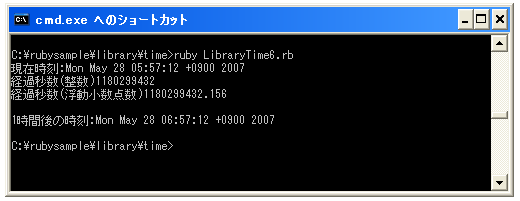

- Home ›
- Ruby入門 ›
- 時刻(Time)クラス
起算時からの経過秒数を取得する
Timeクラスのオブジェクトは内部的には起算時である1970年1月1日午前0時からの経過秒数を保持しています。この値を必要に応じて年月日や時分秒などに換算して利用するのですが今回は経過秒数そのものを取得する方法を確認します。Timeクラスで用意されている「to_f」メソッドなどを使います。
変数 = Timeオブジェクト.to_f 変数 = Timeオブジェクト.to_i 変数 = Timeオブジェクト.tv_sec
「to_f」メソッドは起算時からの経過秒数を浮動小数点数で取得します。このメソッドの場合は1秒未満の値も取得できます。
「to_i」メソッド及び「tv_sec」メソッドの場合は起算時からの経過秒数を整数で取得します。このメソッドの場合は最小単位が秒となります。
例えば次のように使用します。
t = Time.now ary = t.to_i
経過秒数からTimeクラスのオブジェクトを作成する
今まではTimeクラスのオブジェクトを作成する方法として現在時刻を取得するか年月日などを指定して作成していました。他の方法として経過秒数を指定してTimeクラスのオブジェクトを作成することが出来ます。Timeクラスで用意されている「at」メソッドを使います。
Time.at(time[, usec])
引数には経過秒数を表す整数又は浮動小数点数を指定します。
なお浮動小数点数でも指定できない細かい値は省略可能な2番目の引数で指定します。この場合は1番目の引数には整数の時刻を指定し、2番目の引数には整数の値を指定します。結果は「time + (usec/1000000)」が指定されたことになります。
例えば次のように使用します。
t = Time.at(6672736622)
サンプルプログラム
では簡単なサンプルで試してみます。
#! ruby -Ks
t = Time.now
timeInteger = t.tv_sec
timeFloat = t.to_f
print("現在時刻:" , t, "¥n")
print("経過秒数(整数)", timeInteger, "¥n")
print("経過秒数(浮動小数点数)", timeFloat, "¥n¥n")
timeInteger = timeInteger + 3600
newTime = Time.at(timeInteger)
print("1時間後の時刻:" , newTime, "¥n")
実行結果は次のようになります。

( Written by Tatsuo Ikura )

著者 / TATSUO IKURA
初心者～中級者の方を対象としたプログラミング方法や開発環境の構築の解説を行うサイトの運営を行っています。